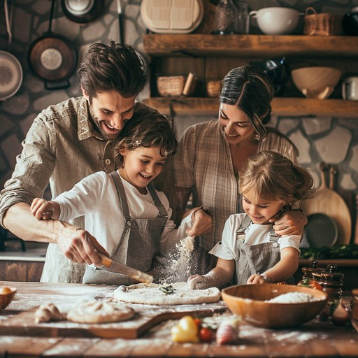
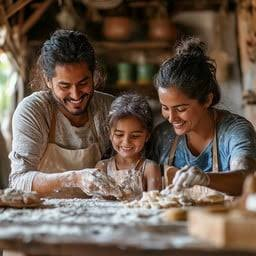

Our History
Ayoba Bakes began in 2015 as a small home kitchen run by the Mokoena family. What started as weekend orders for neighbours quickly grew into a beloved local bakery. In 2018 we opened our first proper shop on Landdros Mare Street, and today we proudly serve thousands of happy customers across Polokwane every month.

Mission & Vision
Our Mission
To bake honest, affordable, high-quality treats that bring the Polokwane community together, one loaf at a time.
Our Vision
To become Limpopo's most loved bakery, known for warmth, quality, and a genuine care for both our customers and our local suppliers.
Meet the Team
- Thabo Mokoena – Founder and Head Baker
- Lerato Mokoena – Cake Designer and Co-owner
- Sipho Ndlovu – Pastry Chef
